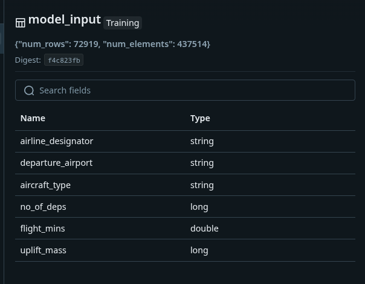
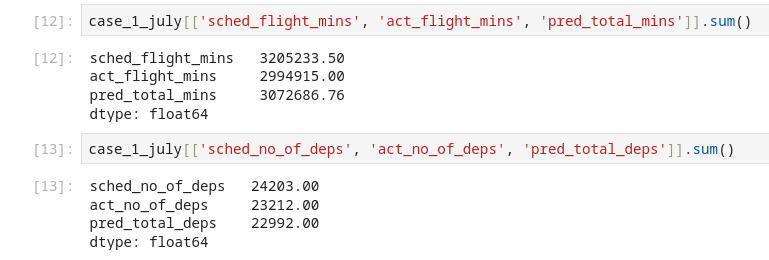

Uplift Forecast
DataTactics GmbH
26-08-2025
Staus Quo
The current tool assigns the average uplift from the last three full calendar months for the city pair, airline and aircraft type to each event in the schedule and sums uplift.
Goal: More efficient fuel Uplift forecast
Taking a different approach we will try to model the changes in the flight plan from schedule to actual in order to have a more precise flight plan that can be used to calculate the uplift needed.
Assumptions
- Using a seasonal avg of mins flown will be better than the scheduled min
- Minutes flown and total departures have a direct relationship with uplift
- Due to scheduling flux modeling schedule changes will lead to more accurate forecasts
Problems that could hurt forecast
- Uplift values to train model 2 can only be used from 2025 due to new tankering regulations
- Fueling data from start of 2025 still adjusting to the tankering regulations
- Anomalies such as weather events and economic changes could affect the forecast
Schedule behavior analysis - ariline designator
Schedule behavior analysis - airport
Our Idea Model 1
- Scheduled and actual flight plan are rarely the same
- Model difference between scheduled and actual flights
- Forecast: Number of departures and minutes flown
Model 1 input features

Our Idea Model 2
- Use output of model 1 as input to predict total uplift
- Instead of using avg try other ML based models
- Compare the results to status quo as well as actual burnoff
Model 2 input features

Model Flow Chart

General Results Model 1

General Results Model 2

Current Status
The model pipeline has been set. However the comparison with the actual uplift is still not matching up. We plan on improving model 1 while getting model 2 to a place where the uplift forecast is more accurate and eventually better than the status quo.
Next Steps
- Model 2: get reasonable results from the forecast
- Model 1: improve, add more features such as economic impact, waeather and so on
- Set up in test environment for rigorous testing comparing with current forecast and actual uplift